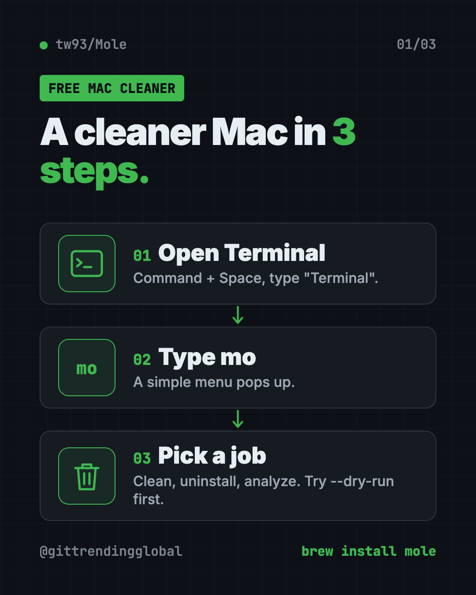
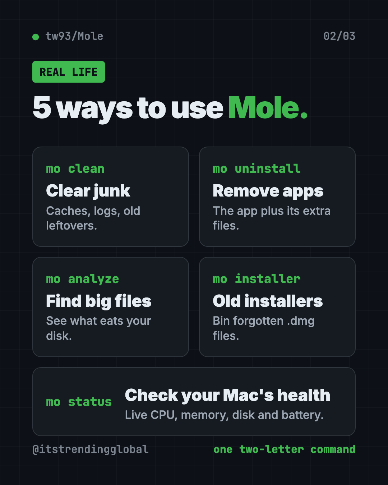
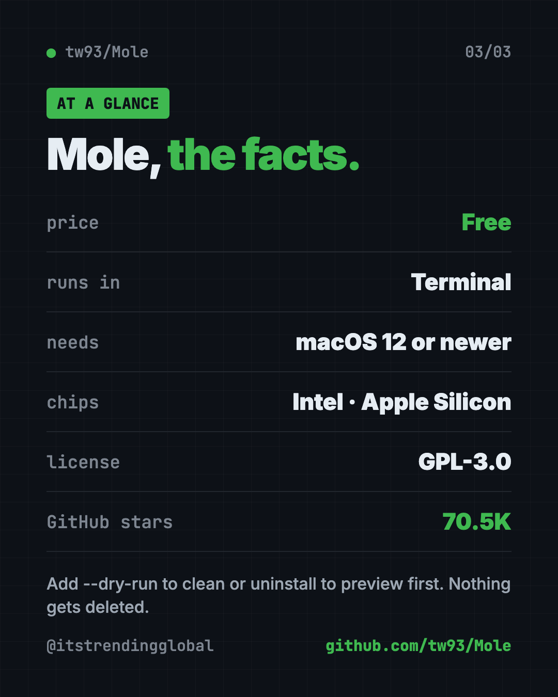

Mole: Free Mac Cleaner That Runs in Terminal (2026)
- Published 15 Oct 2026
- Updated 16 Oct 2026
- 8 min read
- License GPL-3.0
- By the ITG Now team
Mole is a free Mac cleaner that clears junk files, fully removes apps and shows what is eating your disk. You run it by typing one short word, mo, in the Terminal app.
If your Mac keeps nagging you that storage is almost full, this guide shows what Mole does, how to install it in two minutes, and how to use it without deleting anything you care about.
See all free alternatives to CleanMyMac
Key takeaways
- Free and open source. The Terminal tool costs nothing. The code is public under the GPL-3.0 license.
- Five jobs in one. Its maker compares it to CleanMyMac, AppCleaner, DaisyDisk and iStat Menus rolled together.
- Safe to try. Add
--dry-runto see what Mole would remove before it removes anything. - Mac first. It needs macOS 12 or newer and works on Intel and Apple Silicon. A Windows version lives on a separate branch.
- Popular. About 70.5K people have starred it on GitHub.
What is Mole?
Mole is a cleaning and checkup toolkit for your Mac. The README (the project's main instructions page) calls it a way to "deep clean, uninstall apps, optimize, analyze disk, and monitor your Mac."
It is made by developer Tw93, who also built Pake, the tiny desktop app maker.
The free version lives in Terminal, the Mac's built-in app for typing commands. There are no big buttons. You type mo, a simple menu appears, and you pick an option with your arrow keys. It looks techy for about ten seconds, then it feels like a normal menu.
There is also a separate app with windows and buttons, called Mole for Mac, at mole.fit. It is a different download. This guide covers the free Terminal tool.

What can Mole do on your Mac?
Each job has its own short command. Here they are in plain words:
| Command | What it does |
|---|---|
mo clean |
Removes caches, logs, temp files and leftovers from apps you already deleted. Empties the Trash by default. |
mo uninstall |
Removes an app plus the extra files it scattered around. Keeps your personal settings unless you choose otherwise. |
mo analyze |
Shows a bar chart of what takes up space. Moves items to the Trash only after you confirm. |
mo status |
A live health dashboard: CPU, memory, disk, network, battery and an overall health score. |
mo optimize |
Light upkeep, like refreshing preview thumbnails, icons and the network cache. |
mo installer |
Finds old DMG and PKG install files in Downloads, Desktop and other spots. |
mo purge |
For coders: clears big rebuildable project folders like node_modules. |
Cache files are saved copies apps keep so they load faster. They pile up over the years. Clearing them is usually safe because apps rebuild what they need.
How to use Mole (real examples)
- Fix the "storage almost full" pop-up. Run
mo cleanand let it clear browser caches, app logs and old leftovers. The README's sample run freed 4.5 GB. - Remove an app for real. Dragging an app to the Trash leaves files behind.
mo uninstallfinds the app's extra files and removes them together. - Find the giant forgotten file.
mo analyzeranks your folders by size. It even flags "Old Downloads" older than 90 days. - Clear years of installers. That pile of
.dmgfiles in Downloads adds up.mo installerlists each one with its size, so you choose what goes. - Check why your Mac feels slow.
mo statusshows which apps hog the CPU and memory right now, plus an overall health score.

💡 Tip: Start every new command with
--dry-run, likemo clean --dry-run. Mole shows you the list, and nothing is deleted.
Is Mole really free?
Yes. The Terminal tool on GitHub is free and open source. There is no trial and no account.
Mole for Mac and Mole for Windows, the apps with buttons, are separate downloads from mole.fit. In another of his READMEs, the maker calls Mole for Mac his "paid Mac cleanup app." The README says brew install mole installs the free Terminal tool only.
Is Mole safe to use?
Mole deletes files, so the maker built in a lot of care. The README says it checks every path, protects shared and system folders, and skips anything it "cannot prove" is safe.
A few more safety details from the README:
- Run it without
sudo(the "do this as admin" command). Mole asks for your password only when it needs it. mo clean,uninstall,purge,installerandremovecan delete files. Preview them with--dry-runfirst.- Mole keeps a log of what it cleaned. Type
mo historyto see it. - You can protect things with a whitelist (a list of items Mole must never touch). Run
mo clean --whitelist.
⚠️ Heads up:
mo cleanempties your Trash by default. If you keep things in the Trash "just in case," openmo clean --whitelistand select Trash to keep it.
The maker also warns about fakes. Mole only comes from Homebrew, its GitHub page and mole.fit. Sites offering a "Mole-based" app, or asking you to paste a scrambled command, are not connected to it.
How to install Mole on a Mac
You need macOS 12 or newer. Intel and Apple Silicon Macs both work.
First, open Terminal. Press Command and Space, type "Terminal" and press Enter.
If you have Homebrew (a free app installer for the Mac), copy and paste this:
brew install mole
No Homebrew, or an older Mac Homebrew no longer supports? Copy and paste this instead:
curl -fsSL https://raw.githubusercontent.com/tw93/mole/main/install.sh | bash
Then start Mole. Copy and paste this:
mo
A menu appears. Use the arrow keys to pick a job and press Enter.
To preview a cleanup safely first, copy and paste this:
mo clean --dry-run
To keep Mole up to date later, copy and paste this:
mo update
Install Mole on Windows
A Windows command-line version lives on its own branch. Open PowerShell and copy and paste this:
iwr -useb https://raw.githubusercontent.com/tw93/Mole/windows/quick-install.ps1 | iex
Let Claude or Codex set it up for you
Claude Code and OpenAI Codex are AI helpers that can run Terminal steps on your computer for you. You paste a request, it explains each step, and you approve it.
Copy and paste this:
Please help me install Mole, the free Mac cleaner from github.com/tw93/Mole.
1. Check my macOS version and whether I have Homebrew.
2. Install Mole with Homebrew, or with the official install script if I don't have it.
3. Run "mo clean --dry-run" and explain the results to me in plain words.
4. Do not delete anything until I say yes.
Then try asking:
Run "mo analyze" for me and tell me which 5 folders take the most space.
I want to remove an app completely. Show me what "mo uninstall --dry-run" would delete first.
Help me stop "mo clean" from emptying my Trash using the whitelist.
💡 Tip: Only approve steps you understand. If a command looks odd, ask your AI helper "what does this do?" first.
Mole at a glance
| Price | Free (Terminal tool) |
| Works offline | Yes, once installed |
| Platforms | Mac (macOS 12+); Windows version on a separate branch |
| License | GPL-3.0 (open source) |
| GitHub stars | About 70.5K |
| Needs | Terminal, a few short commands |
| Best for | Mac users who want a free cleaner and are fine typing mo |

Who should use Mole?
- Anyone with a full Mac who does not want to pay for a cleaner app.
- Designers and video makers with big apps and big files to sort out.
- Students on a small 256 GB laptop.
- Coders, who get extra help clearing old project folders.
- People curious about Terminal. Mole is a gentle first step.
If you never want to see a command line, look at our guide to PureMac, another way to free up space on your Mac, or Mole's separate app at mole.fit.
Our take
Mole is one of the most complete free Mac cleaners we have seen. It packs five paid-app ideas into a single two-letter command.
What we like:
- Free, open source and widely used.
- Dry-run previews on every command that deletes.
- Careful by default: skips what it can't prove is safe, keeps your personal app data.
- A real disk map and health dashboard, not just a "clean" button.
- Clear warnings about fake copies.
What to watch for:
- It lives in Terminal. Some people will find that scary at first.
mo cleanempties the Trash unless you change it.mo purgedeletes project folders for good, so keep it for coders.- The Windows version is newer and separate from the main Mac tool.
Like tidy Macs? Pair Mole with Vorssaint Utils, a free all-in-one menu bar app, and Thaw, which cleans up a crowded menu bar.
FAQ
Is Mole a free Mac cleaner?
Yes. The Terminal version of Mole is free and open source under GPL-3.0. The separate Mole for Mac app is a different download from mole.fit.
Is Mole safe for my Mac?
Mole checks paths, protects system folders and skips anything it can't prove is safe. Use --dry-run first to see exactly what it would remove.
Does Mole work without Homebrew?
Yes. The README offers a one-line install script you can paste into Terminal instead of using Homebrew.
Can Mole fully uninstall apps on a Mac?
Yes. mo uninstall removes the app and the related files Mole can tie to it. It keeps your personal settings by default.
Does Mole work on Windows?
There is a Windows command-line version on a separate branch of the project, installed with a PowerShell command. The Mac version is the main one.
How do I remove Mole?
Type mo remove in Terminal. That takes Mole off your Mac.
Get Mole: github.com/tw93/Mole
More free coding tools
- Hindsight Hindsight is free, open-source AI agent memory. It helps AI helpers remember past chats and learn from them. Works with Claude Code, Codex and 60+ tools.
- Ponytail Skill The Ponytail skill is one free prompt that makes your AI coding helper reuse what exists, write half the code, and still keep the tests and safety checks.
- Understand Anything Understand Anything is a free plugin that lets you visualize any codebase as a clickable map with plain-English notes, guided tours and a chat for questions.
- Matt Pocock Skills Matt Pocock skills are free add-ons that make Claude Code, Codex and Copilot ask better questions, test their work and keep your code tidy.
- CodeGraph for Claude Code CodeGraph for Claude Code builds a local map of your code, so your AI helper finds the right files in one step. Free, MIT licensed, runs on your computer.
- Karpathy Skills for Claude Code Karpathy skills for Claude Code is one free rules file that makes your AI coder ask first, keep code simple and only change what you asked for.
Latest AI news
- Meta gives away its big Muse Spark AI for free
- Google launches TorchTPU to rival Nvidia
- ChatGPT adds PIN-locked chats
- NVIDIA releases Cosmos3-H-Dreams surgery simulator
Keep reading

VoiceStudio: Free ElevenLabs Alternative
VoiceStudio is a free ElevenLabs alternative. Clone a voice, dub videos and turn text into speech on your own Mac, Windows or Linux computer.

Folia: Free Animated Lyrics Music Player
Folia is a free animated lyrics music player that shows full-screen moving lyrics for your local music, Navidrome and more. What it does and how to start.

net-merge: Combine Wi-Fi and Phone Internet, Free
net-merge is a free app to use two internet connections at once, like Wi-Fi plus a phone hotspot, on Windows, Mac and Linux. No account or VPN.